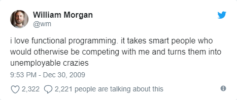
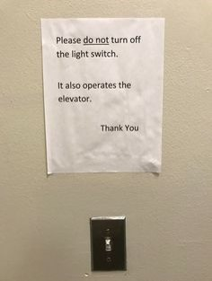
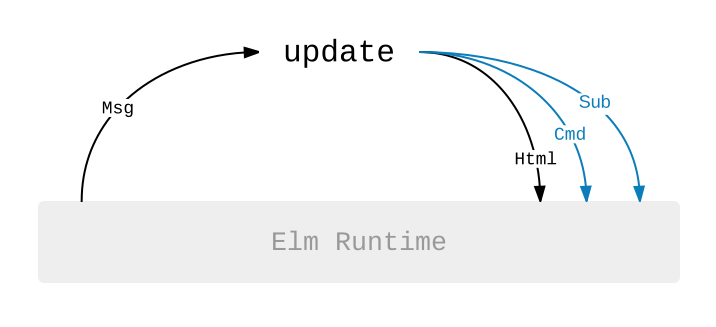
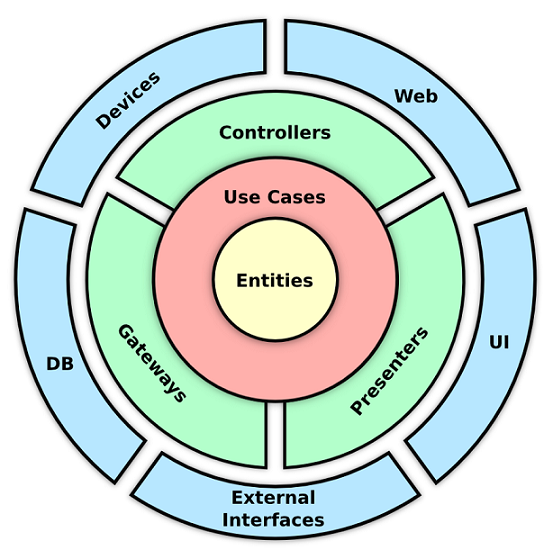
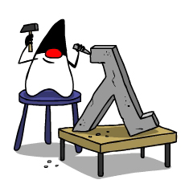
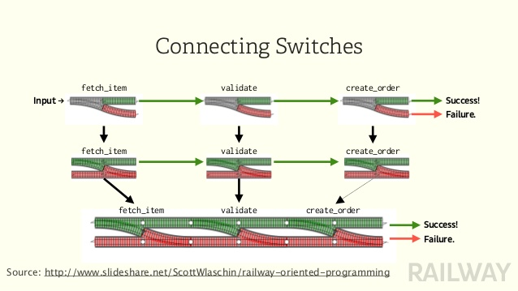

List<Integer> result = new ArrayList<>();
for(int i = 1; i <= 100; i++){
if(number % 2 == 0){
result.add(number);
}
}
System.out.println(result);Funktionale Programmierung für Java-Entwickler
Dominik Schlosser (@dmn1k)
ISO Software Systeme GmbH
Über mich
Software-Entwickler bei ISO Software Systeme GmbH
Java EE, Spring, Angular
Privat u.a. Haskell, Elm, Scala
Die ISO-Gruppe

Anything that is "effectively" computable can be computed by a
Universal Turing Machine
— Alan Turing

By Rocky Acosta - Own work, CC BY 3.0, https://commons.wikimedia.org/w/index.php?curid=24369879
Anything that is "effectively" computable can be computed by
λ-calculus
— Alonzo Church
Lambda calculus (also written as λ-calculus) is a formal system in mathematical logic for expressing computation based on function abstraction and application using variable binding and substitution.
It is a universal model of computation that can be used to simulate any Turing machine.
— https://en.wikipedia.org/wiki/Lambda_calculus
Functional goes mainstream
C#: Lambda-Syntax, LINQ, Pattern Matching
C++: Lambda-Syntax
JavaScript: Lambda-Syntax, Bibliotheken wie ramda
Java: Lambda-Syntax, Stream-API usw seit Version 8
Zusammenfassung: Lambda Calculus
Imperative Sprachen (C, C++, Java usw.) basieren auf der Idee der Turing-Maschine
Funktionale bzw. deklarative Sprachen (Lisp, Haskell, Elm usw.) basieren auf dem Lambda Calculus
Beide Ansätze sind gleich mächtig
Funktionale Konzepte halten vermehrt auch in Mainstream-Sprachen Einzug
Beispiel (Imperativ)
Beispiel (Funktional)
List<Integer> numbers = IntStream.rangeClosed(1, 100);
input.filter(number -> number % 2 == 0)
.forEach(System.out::println);Mit obligatorischem Java-Overhead
List<Integer> numbers = IntStream.rangeClosed(1, 100)
.mapToObj(number -> number)
.collect(Collectors.toList());
input.stream()
.filter(number -> number % 2 == 0)
.forEach(System.out::println);
Quelle: Wikipedia
Keine Seiteneffekte
Quelle: Giphy

Nicht-lokale Zuweisungen
public class Product {
private double price;
public void applyTax(double taxPercent){
this.price = this.price + (this.price * taxPercent / 100);
}
}Immutability
public class Product {
private double price;
public Product applyTax(double taxPercent){
return new Product(this.price + (this.price * taxPercent / 100));
}
}Seiteneffekte in rein funktionalen Sprachen

public interface Command<T> {
/**
* ACHTUNG: Hat potenziell Seiteneffekte!
*/
T execute();
}
public class LoadProductsCommand implements Command<Product> {
private int productId;
public LoadProductsCommand(int id) { productId = id; }
public Product execute() {
return loadFromDb(id);
}
}public interface Runtime {
Message dispatch(Command<T> command);
}
// ...
Message message = runtime.dispatch(loadProductsCommand);
update(message);Funktionaler Kern

Zusammenfassung: Grundlagen der FP
Funktionen sollten pure sein, d.h. bei gleichem Input immer den gleichen Output zurückgeben
Funktionen dürfen keine Seiteneffekte haben
Daten sind unveränderbar
In Hybridsprachen wie Java bietet sich das Pattern "Functional Core - Imperative Shell" an
Functional Java

DEMO
Umgang mit Fehlern
public Product loadProduct(int id) {
try {
return loadProductFromDb(id);
} catch (Exception e) {
LOGGER.error(e);
throw new RuntimeException(e);
}
}Order placeOrder(String itemId){
Item item = fetchItem(itemId);
if(item != null) {
ValidationResult validationResult = validate(item);
if(ValidationResult.OK.equals(validationResult)){
return createOrder(item);
} else {
throw new ValidationException("Validation for Item with id " + itemId + " failed");
}
} else {
throw new ItemNotFoundException("Item with id " + itemId + " not found");
}
}
Monaden: Ein Design Pattern
Monaden sind Container für Werte
Sie abstrahieren über den Zugriff auf diese Werte
Zwei Bestandteile: unit (Erzeugung) und bind (Mapping des enthaltenen Werts)
Monaden: Beispiel
double divide(int dividend, int divisor){
return (double) dividend / divisor;
}Monaden: Beispiel
Optional<Double> divide(int dividend, int divisor){
if(divisor == 0){
return Optional.empty();
}
return Optional.of((double) dividend / divisor);
}Monaden: Beispiel
String result = divide(5, 2)
.map(result -> "Das Ergebnis ist: " + result)
.orElse("Es konnte kein Ergebnis ermittelt werden");
System.out.println(result);Monaden: Ein paar Beispiele
Optional
Stream
List (nicht die JDK-Implementierung)
Try
Observable
Either
…
DEMO
Zusammenfassung: Nutze das Typsystem!
NULL hat keine klare Semantik und sollte daher möglichst vermieden werden
Monaden wie Optional oder Try sind ein Container für Werte
Monaden kann man als ein weiteres Design Pattern erachten, das den Umgang mit Fehlern/Spezialfällen erleichert
Es ist eine gute Idee, das Typsystem zu nutzen um (Fachdomänen-)Semantik abzubilden

Going forward
Frameworks wie jooλ oder vavr
Pattern Matching in zukünftiger Java-Version
Alternative JVM-Sprachen wie Scala, Kotlin, Clojure, …
abstract class Expr {}
class Num extends Expr {
private int value;
}
class Sum extends Expr {
private Expr left;
private Expr right;
}
class Prod extends Expr {
private Expr left;
private Expr right;
}if(x instanceof Num){
Num num = (Num)x;
// ...
} else if (x instanceof Sum){
Sum sum = (Sum)x;
// ...
} else if (x instanceof Prod){
Prod prod = (Prod)x;
// ...
}interface AstVisitor {
void visit(Num num);
void visit(Sum sum);
void visit(Prod prod);
}
abstract class Expr {
abstract void accept(AstVisitor visitor);
}
class Num extends Expr {
void accept(AstVisitor visitor) {
visitor.visit(this);
}
}Pattern Matching - Scala
def evalExpr(e: Expr): Int = e match {
case Num(n) => n
case Sum(l, r) => evalExpr(l) + evalExpr(r)
case Prod(l, r) => evalExpr(l) * evalExpr(r)
}Pattern Matching - vavr
public int evalExpr(Expr expr) {
return Match(expr).of(
Case($(instanceOf(Num.class)), num -> num.getValue()),
Case($(instanceOf(Sum.class)), sum -> evalExpr(sum.getLeft()) + evalExpr(sum.getRight()),
Case($(instanceOf(Prod.class)), prod -> evalExpr(prod.getLeft()) * evalExpr(prod.getRight()),
Case($(), o -> { throw new IllegalStateException(expr); })
);
}Pattern Matching - Java vFuture
public int evalExpr(Expr expr) {
switch(expr){
case Num(int v): return v;
case Sum(Expr l, Expr r): return evalExpr(l) + evalExpr(r);
case Prod(Expr l, Expr r): return evalExpr(l) * evalExpr(r);
default: throw new IllegalStateException(expr);
}
}Zusammenfassung: Pattern Matching
Pattern Matching ist strukturelle Dekomposition einer Typhierarchie
Funktioniert nur auf Typen mit bestimmten Eigenschaften (Wert-Semantik, "unapply", möglichst sealed)
Stand heute muss man Pattern Matching in Code nachbauen (bspw. mit vavr) oder man nutzt bspw. das Visitor-Pattern
Pattern-Matching wird im Rahmen von Project Amber Teil von Java werden
Fehlende Features mit jool nachrüsten
// (1, 2, 3, 4, 5, 6)
Seq.of(1, 2, 3).concat(Seq.of(4, 5, 6));
// (tuple(1, "a"), tuple(2, "b"), tuple(3, "c"))
Seq.of(1, 2, 3).zip(Seq.of("a", "b", "c"));
// (1, 2, 3, 1, 2, 3, 1, 2, 3, 1, 2, ...)
Seq.of(1, 2, 3).cycle();
// tuple((1, 3), (2, 4))
Seq.of(1, 2, 3, 4).partition(i -> i % 2 != 0);Currying mit vavr
Function2<Integer, Integer, Integer> sum = (a, b) -> a + b;
Function1<Integer, Integer> add2 = sum.curried().apply(2);
then(add2.apply(4)).isEqualTo(6);Lifting mit vavr
Function2<Integer, Integer, Integer> divide = (a, b) -> a / b;
Function2<Integer, Integer, Option<Integer>> safeDivide = Function2.lift(divide);
// = None
Option<Integer> i1 = safeDivide.apply(1, 0);
// = Some(2)
Option<Integer> i2 = safeDivide.apply(4, 2);Learn OO.
Learn FP.
Rise above them both.
— Brian Goetz (Java Language Architect)